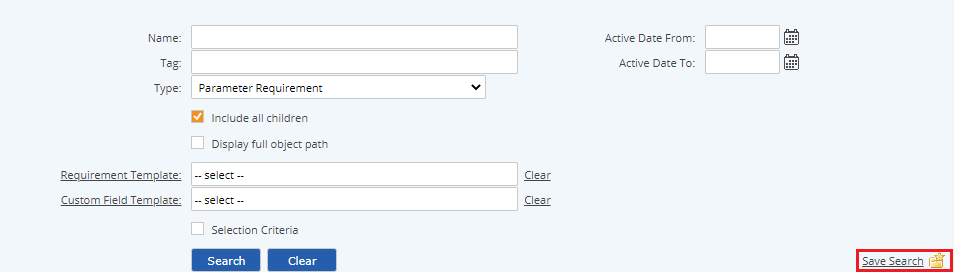
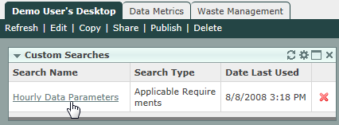

The last set of search criteria chosen in any search pane is preserved and displayed the next time you select that item type. Thus you can easily return to the same search, or use the same search criteria to search from a different parent object. Search criteria is also saved across sessions so will be available by default the next time you log in.
You may also save a search as a Custom Search. When you save a custom search, it will appear on the Custom Searches panel on your Desktop or any other dashboard which contains this panel.
You can also save a search as a Quick Link, which may be added to a dashboard or accessed from your personal Quick Links library. See My Quick Links.
To save a search:
Click Save Search (in the lower right corner of the search pane).

In the pop-up box, enter a name for your saved search, then click Save.
You can edit a saved search by first running the saved search, then edit the search criteria and run again. Click Save Search and the name of the last executed saved search appears. To overwrite it, click Save.
To initiate a saved search, from the Custom Searches panel on your dashboard, click the name of the search.
You are immediately taken to the appropriate area of the system where the search executes.
